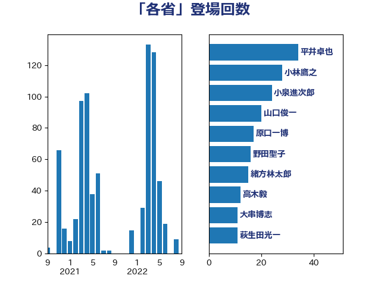

単語「各省」

| 平井卓也 | 自由民主党 | 34 回 |
| 小林鷹之 | 自由民主党 | 28 回 |
| 小泉進次郎 | 自由民主党 | 24 回 |
| 山口俊一 | 自由民主党 | 20 回 |
| 原口一博 | 立憲民主党 | 17 回 |
| 野田聖子 | 自由民主党 | 16 回 |
| 緒方林太郎 | 無所属 | 15 回 |
| 高木毅 | 自由民主党 | 12 回 |
| 大串博志 | 立憲民主党 | 11 回 |
| 萩生田光一 | 自由民主党 | 11 回 |
| 音喜多駿 | 日本維新の会 | 11 回 |
| 馬淵澄夫 | 立憲民主党 | 11 回 |
| 枝野幸男 | 立憲民主党 | 9 回 |
| 阿部司 | 日本維新の会 | 9 回 |
| 小沼巧 | 立憲民主党 | 8 回 |
| 松村祥史 | 自由民主党 | 8 回 |
| 田村憲久 | 自由民主党 | 8 回 |
| 細田博之 | 自由民主党 | 8 回 |
| 後藤茂之 | 自由民主党 | 7 回 |
| 本庄知史 | 立憲民主党 | 7 回 |
| 松野博一 | 自由民主党 | 7 回 |
| 柴田巧 | 日本維新の会 | 7 回 |
| 篠原孝 | 立憲民主党 | 7 回 |
| 西村康稔 | 自由民主党 | 7 回 |
| 足立康史 | 日本維新の会 | 7 回 |
| 井上信治 | 自由民主党 | 6 回 |
| 坂本哲志 | 自由民主党 | 6 回 |
| 梶山弘志 | 自由民主党 | 6 回 |
| 森山浩行 | 立憲民主党 | 6 回 |
| 牧島かれん | 自由民主党 | 6 回 |
| 菅義偉 | 自由民主党 | 6 回 |
| 野村哲郎 | 自由民主党 | 6 回 |
| 鈴木俊一 | 自由民主党 | 6 回 |
| 岸田文雄 | 自由民主党 | 5 回 |
| 金子恭之 | 自由民主党 | 5 回 |
| 末松義規 | 立憲民主党 | 4 回 |
| 武田良太 | 自由民主党 | 4 回 |
| 河野太郎 | 自由民主党 | 4 回 |
| 石川博崇 | 公明党 | 4 回 |
| 細田健一 | 自由民主党 | 4 回 |
| 芳賀道也 | 国民民主党 | 4 回 |
| 藤井比早之 | 自由民主党 | 4 回 |
| 麻生太郎 | 自由民主党 | 4 回 |
| 上川陽子 | 自由民主党 | 3 回 |
| 伊藤孝恵 | 国民民主党 | 3 回 |
| 小林史明 | 自由民主党 | 3 回 |
| 山東昭子 | 自由民主党 | 3 回 |
| 川田龍平 | 立憲民主党 | 3 回 |
| 有村治子 | 自由民主党 | 3 回 |
| 杉久武 | 公明党 | 3 回 |
| 礒崎哲史 | 国民民主党 | 3 回 |
| 里見隆治 | 公明党 | 3 回 |
| 鈴木貴子 | 自由民主党 | 3 回 |
| 中西祐介 | 自由民主党 | 2 回 |
| 井林辰憲 | 自由民主党 | 2 回 |
| 加藤勝信 | 自由民主党 | 2 回 |
| 吉田忠智 | 立憲民主党 | 2 回 |
| 國重徹 | 公明党 | 2 回 |
| 城井崇 | 立憲民主党 | 2 回 |
| 大塚耕平 | 国民民主党 | 2 回 |
| 大岡敏孝 | 自由民主党 | 2 回 |
| 大野泰正 | 自由民主党 | 2 回 |
| 奥野総一郎 | 立憲民主党 | 2 回 |
| 小沢雅仁 | 立憲民主党 | 2 回 |
| 小西洋之 | 立憲民主党 | 2 回 |
| 山口壯 | 自由民主党 | 2 回 |
| 沢田良 | 日本維新の会 | 2 回 |
| 猪口邦子 | 自由民主党 | 2 回 |
| 竹谷とし子 | 公明党 | 2 回 |
| 葉梨康弘 | 自由民主党 | 2 回 |
| 藤岡隆雄 | 立憲民主党 | 2 回 |
| 青柳仁士 | 日本維新の会 | 2 回 |
| 高木かおり | 日本維新の会 | 2 回 |
| 鷲尾英一郎 | 自由民主党 | 2 回 |
| 齋藤健 | 自由民主党 | 2 回 |
| こやり隆史 | 自由民主党 | 1 回 |
| たがや亮 | れいわ新選組 | 1 回 |
| 三ッ林裕巳 | 自由民主党 | 1 回 |
| 三谷英弘 | 自由民主党 | 1 回 |
| 中村裕之 | 自由民主党 | 1 回 |
| 中野洋昌 | 公明党 | 1 回 |
| 佐藤啓 | 自由民主党 | 1 回 |
| 加藤鮎子 | 自由民主党 | 1 回 |
| 吉川沙織 | 立憲民主党 | 1 回 |
| 吉田統彦 | 立憲民主党 | 1 回 |
| 土屋品子 | 自由民主党 | 1 回 |
| 城内実 | 自由民主党 | 1 回 |
| 塩川鉄也 | 日本共産党 | 1 回 |
| 大野敬太郎 | 自由民主党 | 1 回 |
| 太田房江 | 自由民主党 | 1 回 |
| 安江伸夫 | 公明党 | 1 回 |
| 小森卓郎 | 自由民主党 | 1 回 |
| 尾身朝子 | 自由民主党 | 1 回 |
| 山本博司 | 公明党 | 1 回 |
| 山添拓 | 日本共産党 | 1 回 |
| 山田太郎 | 自由民主党 | 1 回 |
| 山谷えり子 | 自由民主党 | 1 回 |
| 岡本あき子 | 立憲民主党 | 1 回 |
| 岡田直樹 | 自由民主党 | 1 回 |
| 岬麻紀 | 日本維新の会 | 1 回 |
| 岸信夫 | 自由民主党 | 1 回 |
| 島村大 | 自由民主党 | 1 回 |
| 市村浩一郎 | 日本維新の会 | 1 回 |
| 平将明 | 自由民主党 | 1 回 |
| 後藤祐一 | 立憲民主党 | 1 回 |
| 本村伸子 | 日本共産党 | 1 回 |
| 杉田水脈 | 自由民主党 | 1 回 |
| 松川るい | 自由民主党 | 1 回 |
| 林芳正 | 自由民主党 | 1 回 |
| 梅村みずほ | 日本維新の会 | 1 回 |
| 森まさこ | 自由民主党 | 1 回 |
| 森本真治 | 立憲民主党 | 1 回 |
| 横沢高徳 | 立憲民主党 | 1 回 |
| 橋本聖子 | 無所属 | 1 回 |
| 江島潔 | 自由民主党 | 1 回 |
| 河野義博 | 公明党 | 1 回 |
| 浦野靖人 | 日本維新の会 | 1 回 |
| 渡辺孝一 | 自由民主党 | 1 回 |
| 玉木雄一郎 | 国民民主党 | 1 回 |
| 田島麻衣子 | 立憲民主党 | 1 回 |
| 田村まみ | 国民民主党 | 1 回 |
| 田村智子 | 日本共産党 | 1 回 |
| 田村貴昭 | 日本共産党 | 1 回 |
| 田畑裕明 | 自由民主党 | 1 回 |
| 矢倉克夫 | 公明党 | 1 回 |
| 石井苗子 | 日本維新の会 | 1 回 |
| 石川昭政 | 自由民主党 | 1 回 |
| 神田憲次 | 自由民主党 | 1 回 |
| 福島伸享 | 無所属 | 1 回 |
| 福田達夫 | 自由民主党 | 1 回 |
| 稲津久 | 公明党 | 1 回 |
| 薗浦健太郎 | 自由民主党 | 1 回 |
| 藤原崇 | 自由民主党 | 1 回 |
| 角田秀穂 | 公明党 | 1 回 |
| 谷合正明 | 公明党 | 1 回 |
| 赤池誠章 | 自由民主党 | 1 回 |
| 赤羽一嘉 | 公明党 | 1 回 |
| 足立敏之 | 自由民主党 | 1 回 |
| 鈴木敦 | 国民民主党 | 1 回 |
| 鈴木英敬 | 自由民主党 | 1 回 |
| 高木宏壽 | 自由民主党 | 1 回 |
| 鬼木誠 | 立憲民主党 | 1 回 |